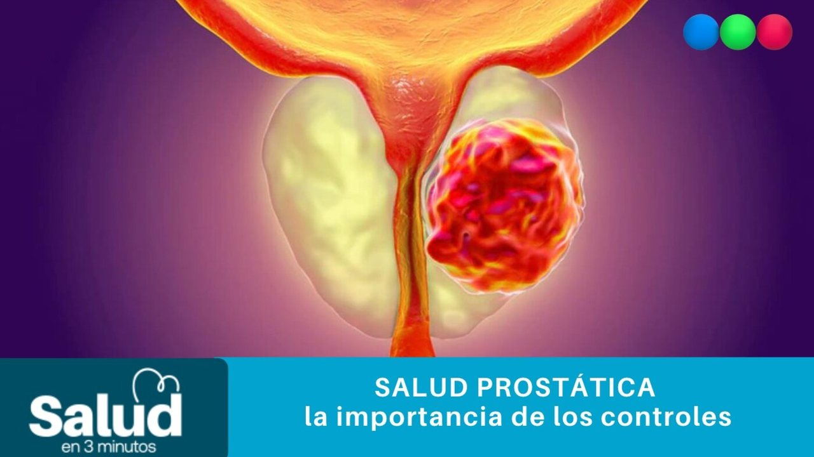
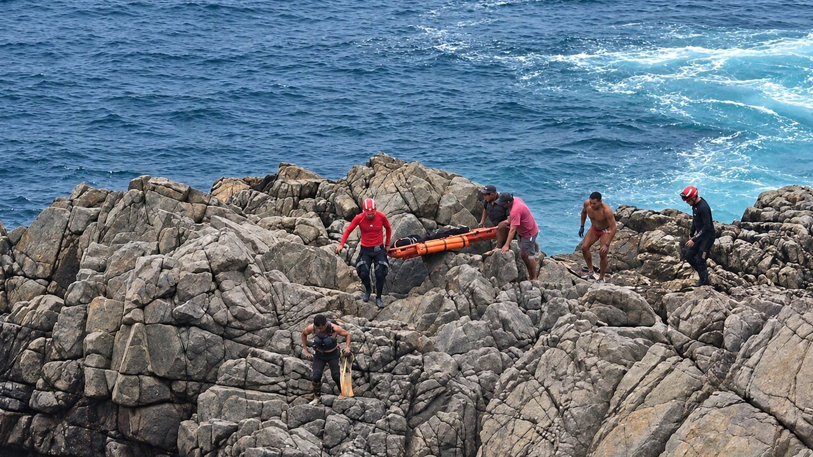

El seguro de desgravamen es obligatorio para los créditos hipotecarios (imagen: Chat GPT). Aunque el seguro de desgravamen es obligatorio para los créditos hipotecarios, los usuarios pueden contratarlo con una aseguradora distinta a la ofrecida por su banco.







El seguro de desgravamen es obligatorio para los créditos hipotecarios (imagen: Chat GPT). Aunque el seguro de desgravamen es obligatorio para los créditos hipotecarios, los usuarios pueden contratarlo con una aseguradora distinta a la ofrecida por su banco.
Día del Cáncer de Próstata: ¿a qué edad iniciar los chequeos y qué exámenes realizarse?
El excanciller Hugo de Zela sostuvo hoy que la presencia al más alto nivel en el Foro APEC 2026, con la presidenta Keiko Fujimori al frente de la delegación peruana, es conveniente para los intereses del país.
El pasado 5 de noviembre de 2026, Florcita Polo acudió a las autoridades para denunciar a su pareja, Luiggi Yarasca, por presuntas agresiones físicas y psicológicas. El proceso legal de Florcita Polo registró un nuevo avance luego de que un juzgado le concediera medidas de protección frente a Luiggi Yarasca.
Una extraña transmisión en redes sociales volvió a poner en el centro de la atención a Renato Rossini Jr. Esta vez, el protagonista fue Renato Rossini padre, quien habría realizado un inesperado live donde se alcanzó a escuchar una conversación que despertó la curiosidad de los usuarios.
Dos semanas antes de abordar el avión rumbo a China, la presidenta peruana, Keiko Fujimori, recibió una carta de su homólogo chino, Xi Jinping, con motivo de los 55 años de relaciones diplomáticas entre ambos países.
En términos generales, recomiendo que los hombres comiencen a informarse sobre la detección del cáncer de próstata alrededor de los 45 a 50 años. En quienes tienen antecedentes familiares de cáncer de próstata u otros factores de riesgo, puede ser conveniente iniciar esta conversación desde los 40 años.
La entidad solicita que Plus Ultra informe sobre reembolsos y opciones de viaje alternas para los usuarios afectados. La entidad solicitó que Plus Ultra mantenga habilitados sus canales oficiales de comunicación para atender las consultas y solicitudes de los usuarios.
CD Moquegua consiguió un agónico triunfo por 2 a 1 ante Atlético Grau y aseguró su permanencia en la Liga1 del fútbol peruano.
Cada edición dura menos de dos minutos. En la web tienes el resumen de cada historia y el enlace directo al medio original para leerla completa.
Conoce Olfatecho →